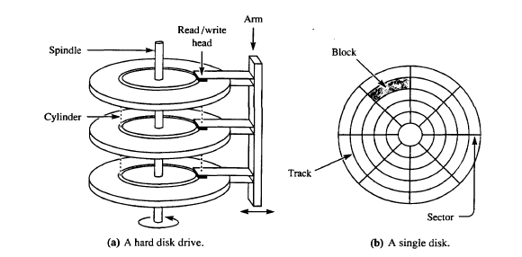
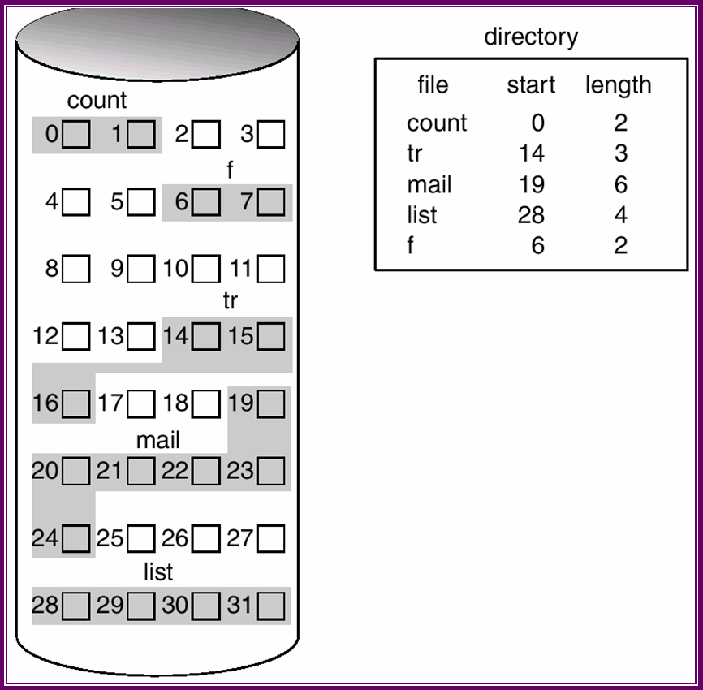
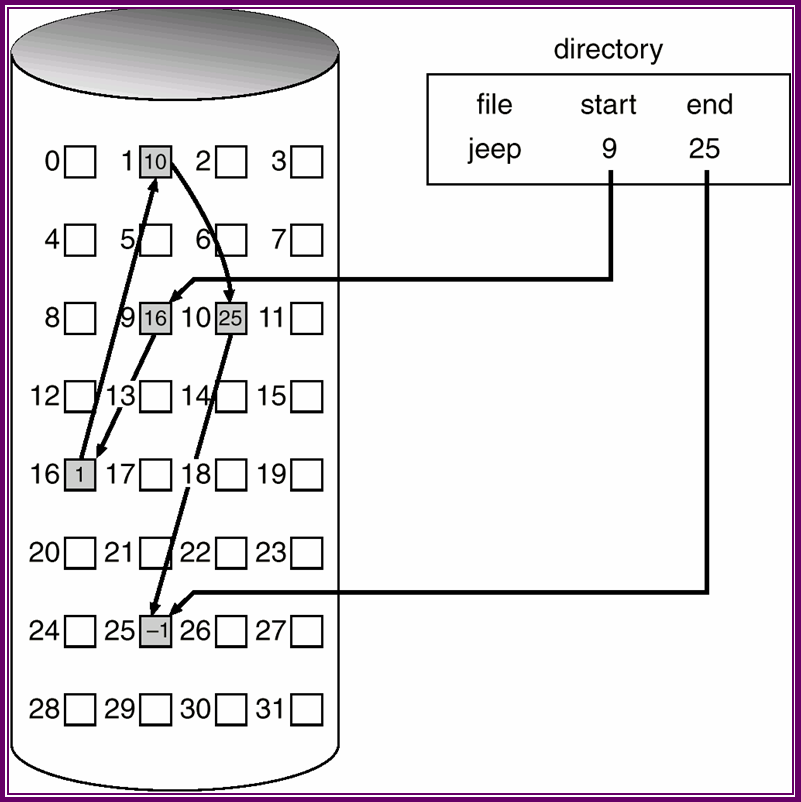
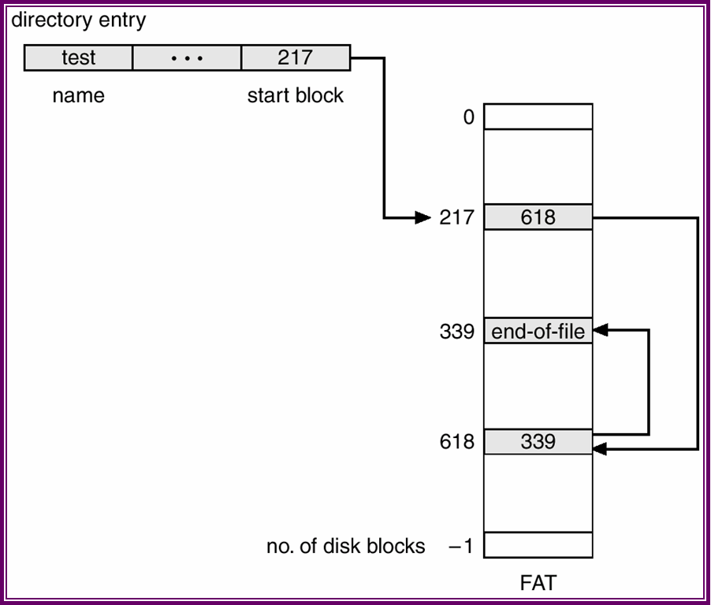

Lecture-35
Operating Systems (CS330)
In this lecture we will look at the various File System types and how does the OS implement multiple File systems. Further we will discuss about various File System implemantation techniques in the context of data organisation on disk and block allocation stratgies.
Modern operating systems(MS Windows, UNIX etc.) support multiple types of FileSystem. For example, Linux supports several file systems such as FAT, ext2, ext3, NFS, iso 9660 (for CD-ROM) etc. Here is a brief introduction about some of these file systems:
FAT : FAT stands for File Allocation Table. This file system does not have a notion of inode. Here meta-data are stored in the directory entry itself. The FAT file system is simple and reliable. It does not lose data because the computer crashed in the middle of an update. It does not use a lot of memory. It does, however, do a lot of extra administrative I/O to different areas of the partition. The directory is allocated at the start of the partition and it contains the table of freespace. To write a new dataset, or to add data to an old one, the disk arm must be constantly moved between the location of the directory and the place where the data is being written. Without optimization, a file can end up fragmented into manysmallpieces.
Ext2 : The Second Extended File System was devised (by Rémy Card) as an extensible and powerful file system for Linux. It is also the most successful file system so far in the Linux community. EXT2 defines the file system topology by describing each file in the system with an inode data structure. As we have seen earlier an inode describes which blocks the data within a file occupies as well as the access rights of the file, the file's modification times and the type of the file. Every file in the EXT2 file system is described by a single inode and each inode has a single unique number identifying it. The inodes for the file system are all kept together in inode tables. EXT2 directories are simply special files (themselves described by inodes) which contain pointers to the inodes of their directory entries.
NTFS : NTFS was designed to allow very large partition size, in anticipation of growing hard disk capacities. It allows file names to be up to 255 characters, instead of the 8+3 character limitation of conventional FAT. NTFS implements specific features to allow important transactions to be completed as an integral whole, to avoid data loss, and to improve fault tolerance.It provides defragmentation capability to overcome the fragmentation problem.
NFS : NFS, or the Network File System, was originally developed by Sun Microsystems in the 1980's as a way to create a file system on diskless clients. NFS provides remote access to shared file systems across networks. This means that a file system may actually be sitting on machine A, but machine B can mount that filesystem and it will look to the users on machine B like the file system resides on the local machine. In this way NFS is transparent to the user. NFS was also designed to be machine, operating system, network architecture, and transport protocol independent..
proc : The Linux process File system known as the proc file system is an example of a file system whose contents are not actually stored anywhere bu are computed on demand and according to user file I/O requests.
As we know that most of the OS support multiple file systems. But the questions arise here are that
An obvious solution is write directory and file routines for each type of file system. but this is not an optimal method. Because some of the basic functionalities are common among different file systems so why we should implement them separately.
Another solution is to use object oriented techniques to organize and modularize the implementation. In this method the kernel file system code is divided into a generic code layer (called the virtual file system layer) and code specific to the various file system types.The code for each supported file system exports a well defined for all files and inode operations.
The inode includes some information for all file system types (FS independent), some file system specific information and an array of function pointers which point to the functions in the file system specific code for performing various file operations. This inode is called as vnode (virtual node).
In this section we will see some basic aspects to be considered while choosing a file System and its implementation technique. Design choice for a file system is guided by performance because the system's performance is very much dependent on file system's performance. Earlier we saw that while making basic file system related system calls, we have to access disk. Disks are very slow relative to CPU speed. So while waiting for a disk I/O to complete, lots of CPU cycles are wasted. So Disk I/O is really bottleneck in the peformance of computers.

Average delay = Half of the rotational time of disk
Transfer Time = Rotational Time / No. of sectors per track
Consider a disk with: No. of surfaces (S) = 21 No. of tracks/surfaces or No. of cylinders(T) = 2627 No. of sectors/track (N) = 99 No. of bytes/sector (B)= 512 Seek time = 11 ms Speed = 5400 rpm Then Capacity of the disk = S*T*N*B = 21*2627*99*512 Bytes = 2.8 GByte Average Rotational Delay = O.5*( 60/5400) = 5.6 ms Data Transfer Rate = 99*512*5400/60 Bytes/sec = 4.6 MBytes/sec Transfer Time for one sector = (512/4.6) micro sec = 0.11 ms Hence Average time to read any sector = 11 + 5.6 + 0.11 = 16.71 ms
From previous example we saw that to make disk I/O faster, we will have to minimize the average cost ( seek time + rotaional delay + transfer time ). We have two components to achieve this:
Organisation Space used Waste Data Only 775.2 0% +inodes,512B block 828.7 6.9% +inodes,1KB block 866.5 11.8% +inodes,2KB block 948.5 22.4% +inodes,4KB block 1128.3 45.6%
Contiguous Allocation
In contiguous allocation method, each file occupies a set of contiguous blocks on the disk. Contiguous allocation of a file is defined by the disk address and length ( in block units ) of the first block. If the file is n blocks long and starts at location b, then it occupies blocks b, b+1, b+2,..., b+n-1. The directory entry for each file indicates the address of the starting block and the length of the area allocatd for this.

One major advantage is that accessing a file that has been allocated contiguously is easy.The number of disk seeks required accessing contiguously allocated files is minimal. For sequential access, the file system remembers the disk address of the last block refrenced and, when necessary, reads the next block. For direct access to block i of a file that starts at block b, we can immediately access block b+i. Thus, both sequential and direct access can be supported by contiguous allocation.
This allocation method suffers from the problem of external fragmentation . As files are allocated and deleted, the free disk space is broken into little pieces. It becomes a problem when the largest continuous chunk is insufficient for a request; storage is fragmented into a number of holes, no one of which is large enough to store the data.
Anoher problem with contiguous allocation is determining how much space is needed for a file. When a file is created, the amount of space it will need must be found and allocated. If the allocated space is too little, then it may be a situation that the file can not be extended. To over come this problem, we may find a larger hole and copy the contents of the file to the new space, and release the previous space. But this action is very time consuming. If the allocated space is very large then it will cause internal fragmentation.
Due to above mentioned problems we find that that contiguous allocation is useful only for Read Only and write once file system such as iso9660 for CD-ROMs where file size is fixed and known already.
Back to ContentsLinked Allocation
With linked allocation, each file is a linked list of disk blocks those may be scattered anywhere on the disk. The last four bytes of each block store the location of the next block. Thus we need to store only the first block number and size in inode or directory entry.
To create a new file, we simply create a new entry in the directory. Each directory entry has a pointer to the first disk block of the file. This pointer is initialized to nil to signify a empty file. The size field is also set to 0. To read a file, we simplly read blocks by following the pointers from block to block. To write to the file, a free block can be found and is then written to, and linked to the end of the file.
There is no external fragmentation with linked allocation, and any free block on the free-space list can be used to satisfy a request. The size of the file does not need to be declared when that file is created. A file can continue to grow as long as free blocks are available.

The major problem with Linked allocation is random access . To find the ith block of a file, we must start at the beginning of that file, and follow the pointers until we get to the ith block. Each access to a pointer requires a disk read, and sometime a disk seek. These disk I/O cause huge cost, hence inefficient.
Another problem is the space required for pointers. The solution to this problem is to collect blocks into multiples, called clusters, and to allocate clusters rather than blocks. Pointers then use a much smaller percentage of file's disk space. This approach results into internal fragmentation.
Another problem of linked allocation is of reliability. As blocks are linked together, if one block goes bad or get corrupted, th entire file will get lost.
File Allocation Table (FAT) ia a variation of linked allocation method. A section of disk at the beginning of each partition coantain the table. The table has one entry for each disk block, and is indexed by block number. The directory entry contains the block number of the first block of the file. The table entry indexed by that block number contains the block number of the next block in the file. This chain continues until the last block, which has a special end-of-file value as the table entry. Unused blocks are indicated bya 0 table value.
To allocate a new block to a file, find the first 0- valued table entry, and replace the previous end-of-file value with the address of the new block. The 0 is then replaced with the ene-of-file value.

The FAT allocation scheme can result in a significant number of disk head seeks, unless the FAT is cached. The disk head has to move to the start of the partition to read the FAT and find the location of the block, then move to the location of the block itself. A benefit of the FAT is that random access time is improved, because the disk head can find the location of any block by reading the information in FAT.
Back to Contents